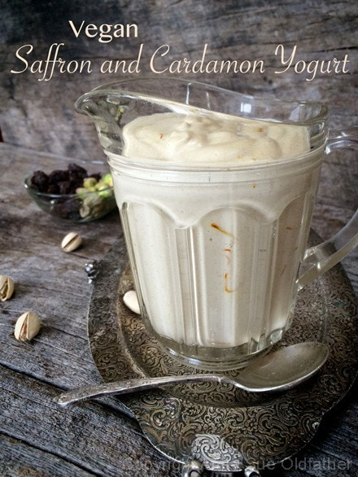
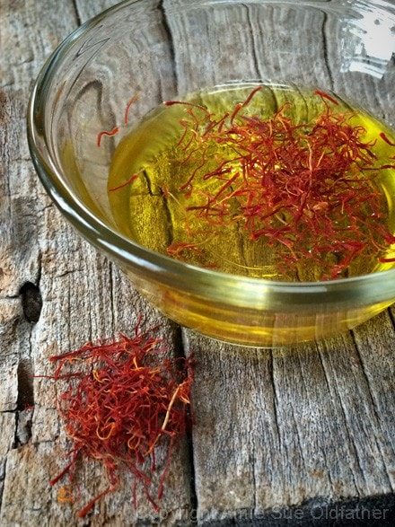
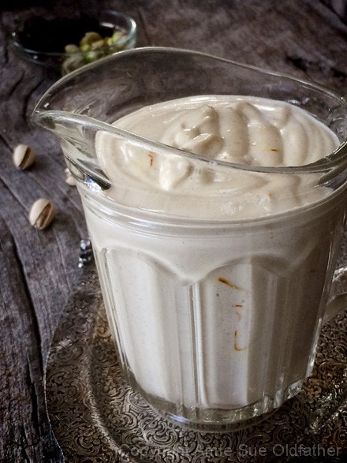
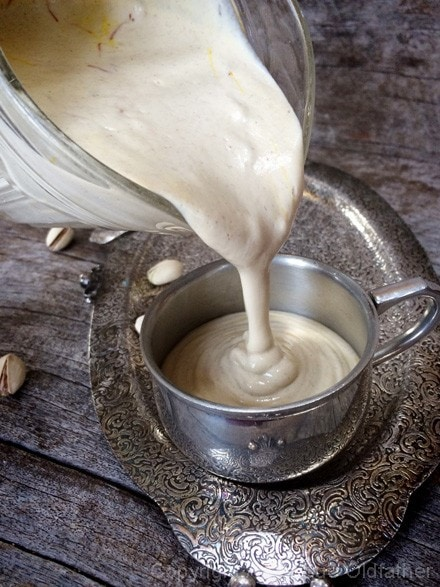
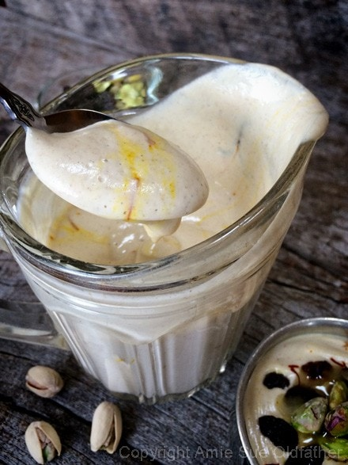
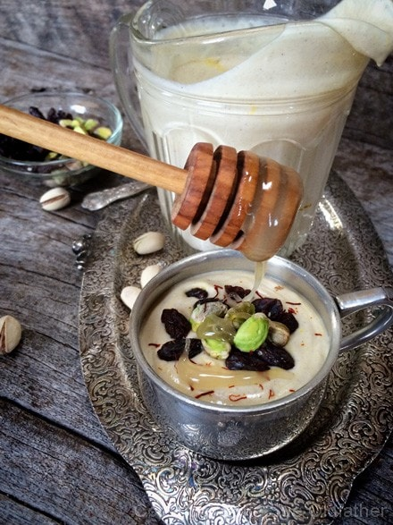
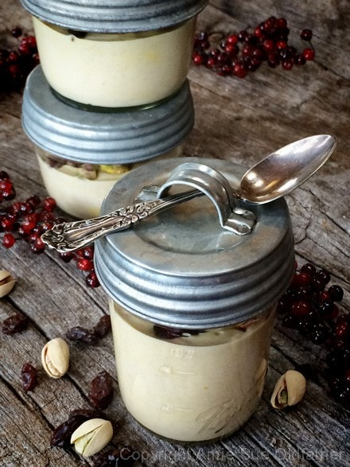
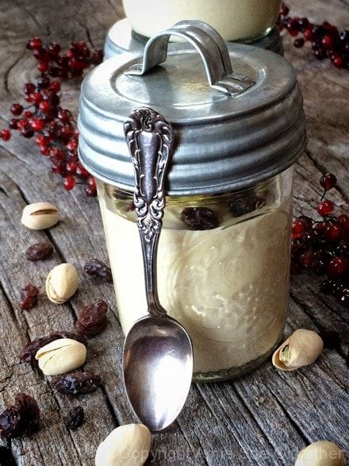
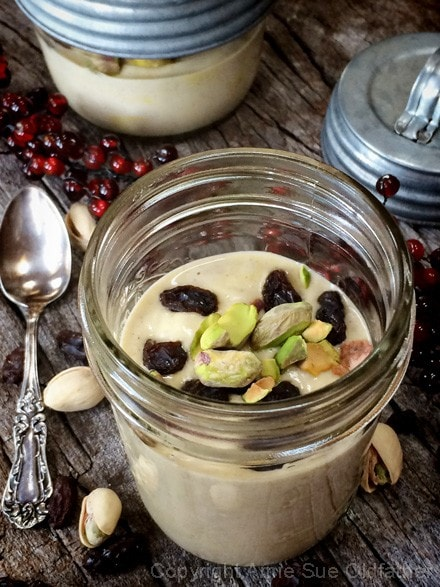

Saffron and Cardamon Yogurt

~ raw, vegan, gluten-free, probiotic free ~
I made this recipe for my mom who spent three weeks with us over the Christmas holiday, and I must say that it wasn’t long enough! She is one of my largest supporters, right up there with Bob, so I just love making raw foods for her whenever she visits.
I have made many different raw yogurts, but I am always experimenting and finding different ways of making them. I have the Greek Nogurt which is cashew based and uses probiotics to ferment.
For those who have nut allergies to cashews, I made a Young Thai Coconut Yogurt that also uses probiotics. Both of those recipes require 1-2 days to culture, but, this recipe can be made on the spot (well after soaking the cashews for 2 hours) and enjoyed right away.
So for those who are in a hurry or for those who can’t find probiotics, you can always make this recipe. Today, I get to shine the spotlight on a special guest that I haven’t had on my “show” before. Saffron. (holds up the applause sign) I hope to keep you in awe as I share a few things that I have learned about saffron that kept me in awe.
Saffron is the most expensive spice by weight. Saffron threads are the stigmas of a small purple crocus – each flower produces only three threads, which must be picked and sorted by hand. Oh, sign me up for that job, please. Lol, They are then dried to give us the spice and coloring agent that we call saffron. It takes over 75,000 flowers to produce a pound of saffron!!! I feel for the person who had to figure that out. :) Fortunately, very few threads are all that is needed for most recipes. A gram contains enough threads for a dozen or more uses. So be sure to store it in a closed container and keep in a cool dark place away from the light since light rays oxidize the pigments in saffron and changes its flavor.
Due to the handsome price it demands, there are many fake products being dyed to imitate saffron, so buyer beware. To determine whether or not what you have bought is fake… immerse a bit of the product in warm water. If the liquid colors immediately, then the saffron is fake. Authentic saffron must soak in either warm water for at least 10 to 15 minutes before its deep red-gold color, and the saffron aroma begins to develop.
Despite its cost, many herbalists and natural health enthusiasts consider saffron’s health benefits to be worth their weight in gold. It is known to be used in the treatment of asthma, menstrual discomfort, depression, atherosclerosis, whooping cough, and many other problems. Some studies have also indicated that saffron may also have anti-cancer properties as well. I dunno, (scratches head) I am still in shock that they painstakingly pluck three strands of this from one flower at a time… but it is good to know that these fragile tiny strands can be a great aid to our health. Flavor wise, saffron has a characteristic pungent bitter-honey taste with a pleasant aroma.
The psyllium husk gel adds a wonderful creaminess to this yogurt. You can make it without but I recommend its use. The lemon juice is what gives the yogurt the “tang.” This is usually achieved by using probiotics and allowing it to ferment for 24-48 hours. I do prefer the fermented yogurt in the long run due to its higher nutritional value, but if you want a short-order of yogurt, this is a nice easy way to prepare it. Keep in mind that the longer this yogurt is stored in the fridge, the more tart it will become due to the lemon juice.

Ingredients:
Yields 2 1/4 cups
“Yogurt”:
- Large pinch saffron soaked in 1/4 cup water
- 1/2 tsp psyllium husks powder soaked in 1/2 cup water
- 1 cup raw cashews, soaked 2+ hours
- 1/4 cup water
- 2 Tbsp fresh lemon juice
- 2 Tbsp raw honey or raw coconut nectar
- 1 Tbsp vanilla
- 1/4 cup Medjool dates, pitted
- 1/4 tsp ground cardamon
Topping:
- Raw honey
- Raisins
- Pistachios
Preparation:
- After soaking the cashews, be sure to drain, rinse and discard the water.
- In a small bowl combine the saffron and 1/4 cup of water and set aside to soak while you work on the rest of the recipe.
- Combine the psyllium powder and water in a small bowl, stir and set it aside while you put the rest of the ingredients together. It will thicken during this time.
- If you have psyllium husks (not powder), be sure to grind them down to a powder before adding to the water. You can do this in a spice or coffee grinder.
- In a high-powered blender combine the cashews, 1/4 cup water, lemon juice, raw honey, vanilla, dates, and cardamon. Blend until creamy smooth.
- Test the batter by rubbing a dab of it between your fingers. If you feel any grit, keep blending. We are looking for a smooth texture.
- Now add in the thickened psyllium gel and blend until well mixed in.
- Pour the yogurt into a mixing bowl.
- Strain the saffron strands from the water and add just the strands to the yogurt. Stir them in.
- Discard the soak water or add it to the yogurt if you desire a thinner consistency. Keep in mind that the yogurt will firm up a bit once chilled.
- You can enjoy your yogurt right away of place in a fridge for several hours to thoroughly chill and set up. Once ready to serve, pour into a single serving dish and top with drizzled honey, a sprinkle of raisins and a tablespoon or two of shelled pistachios.
- Store in the fridge for up to 3 days, however, because it contains lemon juice, the longer it is stored, the more tart it will become.
The Institute of Culinary Ingredients™
- Raw honey isn’t vegan, but I still use now and again. Read (here) why I like to.
- Learn about the wonderful characteristics of Raw Coconut Nectar (here).
- Why do I specify Ceylon cinnamon? Click (here) to learn why.
- How does psyllium work in a recipe? Learn more (here).








© AmieSue.com